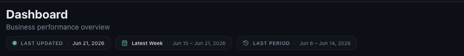
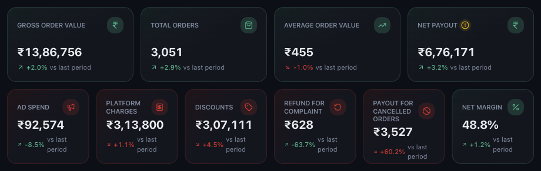

| LAST UPDATED | The most recent day Mynt holds data for. If it is stale, no newer payout email has arrived. |
|---|---|
| The period chip | The range currently on screen — the label plus its exact dates. |
| LAST PERIOD | The range every vs last period figure is compared against. |
Ten cards summarise the period. They fall into three groups: what customers spent, what it cost you, and what you kept.

| Gross Order Value | What customers were billed, before any platform deduction. |
|---|---|
| Total Orders | Orders in the period. |
| Average Order Value | Gross order value divided by orders. |
| Net Payout | What actually reaches your bank after everything is deducted. |
| Ad Spend | What you spent on platform advertising. |
| Platform Charges | Commission, payment gateway, delivery and other platform fees. |
| Discounts | The value of discounts and coupons applied. |
| Refund for Complaint | Refunds issued against customer complaints. |
| Payout for Cancelled Orders | What you were still paid on cancelled orders. |
| Net Margin | Net payout as a percentage of gross order value. |
See reading trends, comparisons and AI insights.
Every number obeys the filter panel on the left. If a figure looks wrong, check the filters before anything else — see using the filters.
Or open Help & Support in Mynt and raise a ticket.